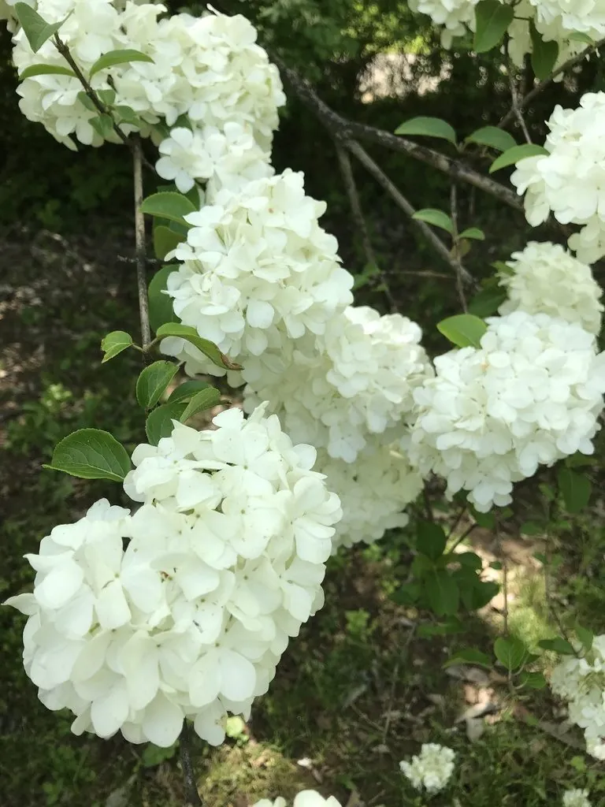

灌木与花木 · 植物界
琼花 Viburnum macrocephalum

忍冬科落叶或半常绿灌木，大型白色聚伞花序如雪球，暮春开放，中国特有，江苏扬州以琼花闻名。
- 分类
- 门被子植物门纲木兰纲目川续断目科忍冬科属荚蒾属
- 栖息环境
- 海拔 800 米以下的丘陵林下、灌丛与庭院，喜温暖湿润、耐半阴
- 地理分布
- 中国江苏、浙江、安徽、湖北、湖南等地，以扬州最负盛名
- 保护级别
- 暂无评估；中国未列入国家重点保护野生植物名录
物种志
琼花为忍冬科荚蒾属落叶或半常绿灌木，高 2–4 米，树皮灰褐色，小枝被星状毛。叶片对生，卵形至椭圆形，边缘具细锯齿。聚伞花序大型，直径 8–15 厘米，边缘为白色不孕花，中央为可育小花，花期 4–5 月；核果椭圆形，成熟时红色后转黑色，果期 9–10 月。
琼花原产中国江苏、浙江、安徽、湖北、湖南等地，生于丘陵林下与灌丛，是中国特有的观赏花木，以江苏扬州最负盛名。它喜光，也耐半阴，喜温暖湿润，适宜疏松肥沃、排水良好的土壤。相传隋炀帝开凿大运河就是为了到扬州观赏琼花，虽为传说，却可见琼花在文化中的分量。扬州琼花观、瘦西湖畔的琼花每年暮春盛开，花序洁白如雪，是江南春景的代表。
形态与习性
- 株高2–4 m，小枝被星状毛
- 花期4–5 月，大型白色聚伞花序
- 果期9–10 月，核果由红转黑
- 光照喜光，也耐半阴
- 水分喜湿润，忌积水
- 土壤疏松肥沃、排水良好的壤土
- 主要用途庭院与公园观赏，江南传统名花
趣味知识
- 琼花的花序边缘是白色不孕花，中央才是可育的小花。
- 江苏扬州以琼花闻名，琼花观与瘦西湖是著名的赏花地。
- 相传隋炀帝开凿大运河赴扬州赏琼花，虽为传说，却流传甚广。
- 琼花是中国特有的观赏花木，与木绣球外形相似但花序结构不同。